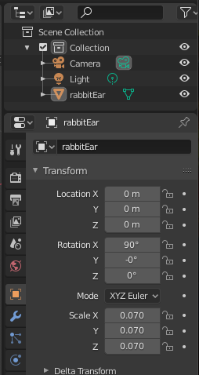

Last Updated: 2020-10-17
What you'll build
In this codelab, we will learn how to use Augmented Faces API. We will use ARCore Android SDK and Kotlin without using Sceneform SDK.
Your app will:
- Apply texture to a face mesh
- Define custom face landmarks and add 3D models
- Change models and textures at runtime
- Tint background with another color using shaders

This codelab is focused on Augmented Faces API. Non-relevant concepts and code blocks are glossed over and are provided for you to simply copy and paste.
Hardware Requirements
- A supported ARCore device, connected via a USB cable to your development machine. This device also must support the Depth API. Please see this list of supported devices.
- Enable USB debugging for this device.
Software Requirements
- ARCore SDK 1.19.0 or later.
- A development machine with Android Studio (v3.0 or later).
It is recommended to go through the first codelab "Augmented Faces with ARCore Codelab".
Download the Starter Project
You can either clone the repository:
git clone --branch final_codelab https://github.com/Kristina-Simakova/photobooth_codelab_start_project.gitOr download a ZIP file and extract it:
Launch Android Studio. Click Open an existing Android Studio project.
Running the project
When you run the app for the first time, it will request CAMERA permission. Tap Allow to continue.
What's our starting point?
Our starting point is a modified version of ARCore SDK sample for Augmented Faces. The code has been modified in a way that we can now easily add different textures and objects to a face object without using Sceneform SDK.
Project structure
Helpers- original Java files from sample codeRendering- original Java files from sample code that handles rendering of AR objects and background
Additional files for this Codelab:
AugmentedFaceFragment.kt- handles rendering and tracking of Augmented FacesAugmentedFaceListener.kt- handles Add and Update Augmented Faces callbacksAugmentedFaceNode.kt- handles the rendering of a face including a texture and associated 3D modelsAugmentedFaceRenderer.kt- renders face textureFaceRegion.kt- renders 3D model located on a defined FaceLandmark

MainActivity setup
activity_main.xml
<?xml version="1.0" encoding="utf-8"?>
<androidx.constraintlayout.widget.ConstraintLayout xmlns:android="http://schemas.android.com/apk/res/android"
xmlns:tools="http://schemas.android.com/tools"
android:layout_width="match_parent"
android:layout_height="match_parent"
tools:context=".MainActivity">
<fragment android:name="blog.creativetech.arfaces.arface.AugmentedFaceFragment"
android:id="@+id/face_view"
android:layout_width="match_parent"
android:layout_height="match_parent"
android:layout_gravity="top" />
</androidx.constraintlayout.widget.ConstraintLayout>
MainActivity.kt
class MainActivity : AppCompatActivity(), AugmentedFaceListener {
override fun onCreate(savedInstanceState: Bundle?) {
super.onCreate(savedInstanceState)
setContentView(R.layout.activity_main)
(face_view as AugmentedFaceFragment).setAugmentedFaceListener(this)
}
override fun onFaceAdded(face: AugmentedFaceNode) {}
override fun onFaceUpdate(face: AugmentedFaceNode) {}
}In activity_main.xml we add AugmentedFaceFragment as a main view and to be able to receive events from this fragment, we need to define and set AugmentedFaceListener to our fragment.
onFaceAdded method will be called when ARCore detects a new face and onFaceUpdate will be called on each frame update.
Let's see how we can define custom face landmarks, like eyes, mouth and lips.
Face Mesh Vertices
AugmentedFace describes a face detected by ARCore and has access to face mesh related data. One of those methods is getMeshVertices that returns a FloatBuffer.
ARCore github repository has a canonical_face_mesh.fbx face model as a reference to help creators make custom textures and 3D models. According to this documentation, canonical_face_mesh.fbx model got 468 point face texture mesh.
We can see the face mesh with numbered mesh vertices. We are going to use this image to find and define our custom face landmarks.

Define EYE_LEFT landmark
First, we need to define a new value in FaceLandmark enum
AugmentedFaceNode.kt
companion object {
enum class FaceLandmark {
FOREHEAD_RIGHT,
FOREHEAD_LEFT,
NOSE_TIP,
EYE_LEFT
}
}Now, we need to understand how we can calculate EYE_LEFT face landmark. Let's take vertex number 374 as a starting point.
Get vertex position
getMeshVertices method will return 468 * 3 values (x,y,z- coordinates for 468 points). x,y,z - coordinates for vertex number 374 can be calculated as:
X = meshVertices.get(374 * 3)
Y = meshVertices.get(374 * 3 + 1)
Z = meshVertices.get(374 * 3 + 2)
Mesh vertices are relative to the centerPose of the face and therefore we need to take centerPose into account. Calculation for EYE_LEFT landmark will look as following:
AugmentedFaceNode.kt
FaceLandmark.EYE_LEFT -> {
val centerPose = augmentedFace?.centerPose
val buffer = augmentedFace?.meshVertices
buffer?.let { vertices ->
centerPose?.compose(Pose.makeTranslation(vertices.get(374 * 3),
vertices.get(374 * 3 + 1),
vertices.get(374 * 3 + 2)))
}
}Define EYE_RIGHT landmark
Let's quickly define EYE_RIGHT landmark next:
AugmentedFaceNode.kt
companion object {
enum class FaceLandmark {
FOREHEAD_RIGHT,
FOREHEAD_LEFT,
NOSE_TIP,
EYE_LEFT,
EYE_RIGHT
}
}Let's refactor getRegionPose and add a new method called getLandmarkPose. After refactoring, the code should look like this:
AugmentedFaceNode.kt
private fun getRegionPose(faceLandmark: FaceLandmark) : Pose? {
return when (faceLandmark) {
FaceLandmark.NOSE_TIP -> augmentedFace?.getRegionPose(AugmentedFace.RegionType.NOSE_TIP)
FaceLandmark.FOREHEAD_LEFT -> augmentedFace?.getRegionPose(AugmentedFace.RegionType.FOREHEAD_LEFT)
FaceLandmark.FOREHEAD_RIGHT -> augmentedFace?.getRegionPose(AugmentedFace.RegionType.FOREHEAD_RIGHT)
FaceLandmark.EYE_LEFT -> getLandmarkPose(374)
FaceLandmark.EYE_RIGHT -> getLandmarkPose(145)
}
}
private fun getLandmarkPose(vertexIndex: Int) : Pose? {
val centerPose = augmentedFace?.centerPose
val buffer = augmentedFace?.meshVertices
return buffer?.let { vertices ->
centerPose?.compose(Pose.makeTranslation(vertices.get(vertexIndex * 3),
vertices.get(vertexIndex * 3 + 1),
vertices.get(vertexIndex * 3 + 2)))
}
}Define MUSTACHE landmark
Let's quickly define MUSTACHE landmark next:
AugmentedFaceNode.kt
companion object {
enum class FaceLandmark {
FOREHEAD_RIGHT,
FOREHEAD_LEFT,
NOSE_TIP,
EYE_LEFT,
EYE_RIGHT,
MUSTACHE
}
}Add MUSTACHE landmark with vertexIndex equals to 11:
AugmentedFaceNode.kt
private fun getRegionPose(faceLandmark: FaceLandmark) : Pose? {
return when (faceLandmark) {
FaceLandmark.NOSE_TIP -> augmentedFace?.getRegionPose(AugmentedFace.RegionType.NOSE_TIP)
FaceLandmark.FOREHEAD_LEFT -> augmentedFace?.getRegionPose(AugmentedFace.RegionType.FOREHEAD_LEFT)
FaceLandmark.FOREHEAD_RIGHT -> augmentedFace?.getRegionPose(AugmentedFace.RegionType.FOREHEAD_RIGHT)
FaceLandmark.EYE_LEFT -> getLandmarkPose(374)
FaceLandmark.EYE_RIGHT -> getLandmarkPose(145)
FaceLandmark.MUSTACHE -> getLandmarkPose(11)
}
}Currently, both ARCore samples and this project supports only .OBJ files with baked textures. In this chapter, we will learn how to make .OBJ files and how to generate the texture for our models.
Working in Blender
Blender is the free and open source 3D creation suite. It supports the entirety of the 3D pipeline—modeling, rigging, animation, simulation, rendering, compositing and motion tracking, video editing and 2D animation pipeline.
Before we can start:
Importing OBJ files
- Open Blender
- File -> Import -> Wavefront (.obj)
- Select rabbitEar.obj
Scaling down/up
1 unit in Blender will correspond to 1 meter in ARCore view. Let's scale down this model to fit our purpose:

- Set object scale to 0.070
- Delete
Cubeobject from the scene
Bake a texture
Now we will have a step by step guide on how to unwrap and generate a texture file for our object. Follow this video tutorial to learn how:
Save the texture and export .OBJ file
As shown in the video, save a generated texture and a .OBJ file.
Download models
In the next chapter, we will use several 3D models and textures. Please download models folder and copy all files into main/assets/models folder
Refactoring for multiple mask support
Now we want to add other face mask options and switch between them on screen tap.
Let's start with creating and defining data classes in arface folder:
FaceMask.kt
package blog.creativetech.arfaces.arface
data class FaceMaskElement(val landmark: AugmentedFaceNode.Companion.FaceLandmark,
val model: String,
val texture: String)
data class FaceMask(val faceTexture: String?,
val landmarkMap: ArrayList<FaceMaskElement>?)
The next step is to refactor setRegionModel method as following:
AugmentedFaceNode.kt
fun setRegionModel(faceMaskElement: FaceMaskElement) {
val faceRegion = FaceRegion(faceMaskElement.landmark)
faceRegion.setRenderable(context, faceMaskElement.model, faceMaskElement.texture)
faceLandmarks[faceMaskElement.landmark] = faceRegion
}In MainActivity, let's make following changes:
- Define following variables:
faceMasks: store all face masks we will use in the appcurrentMaskIndex: a current index of displayed mask
- Init faceMasks array onCreate
- Refactor onFaceAdded to use new data classes
MainActivity.kt
class MainActivity : AppCompatActivity(), AugmentedFaceListener {
private var faceMasks = ArrayList<FaceMask>()
private var currentMaskIndex : Int = 0
override fun onCreate(savedInstanceState: Bundle?) {
super.onCreate(savedInstanceState)
setContentView(R.layout.activity_main)
(face_view as AugmentedFaceFragment).setAugmentedFaceListener(this)
initMasks()
}
override fun onFaceAdded(face: AugmentedFaceNode) {
val currentMask = faceMasks[currentMaskIndex]
currentMask.faceTexture?.let {
face.setFaceMeshTexture(it)
}
currentMask.landmarkMap?.let { landmarks ->
for (landmark in landmarks) {
face.setRegionModel(landmark)
}
}
}
override fun onFaceUpdate(face: AugmentedFaceNode) {}
private fun initMasks() {
val landmarks = ArrayList<FaceMaskElement>()
landmarks.add(FaceMaskElement(
AugmentedFaceNode.Companion.FaceLandmark.NOSE_TIP,
"models/NOSE.obj",
"models/nose_fur.png"))
landmarks.add(FaceMaskElement(
AugmentedFaceNode.Companion.FaceLandmark.FOREHEAD_LEFT,
"models/FOREHEAD_LEFT.obj",
"models/ear_fur.png"))
landmarks.add(FaceMaskElement(
AugmentedFaceNode.Companion.FaceLandmark.FOREHEAD_RIGHT,
"models/FOREHEAD_RIGHT.obj",
"models/ear_fur.png"))
faceMasks.add(FaceMask("models/freckles.png", landmarks))
}
}
Add multiple masks
Add a second mask
Now, let's add another mask using provided 3D models and face textures. Refactored initMasks method will look:
MainActivity.kt
private fun initMasks() {
val foxLandmarks = ArrayList<FaceMaskElement>()
foxLandmarks.add(FaceMaskElement(
AugmentedFaceNode.Companion.FaceLandmark.NOSE_TIP,
"models/NOSE.obj",
"models/nose_fur.png"))
foxLandmarks.add(FaceMaskElement(
AugmentedFaceNode.Companion.FaceLandmark.FOREHEAD_LEFT,
"models/FOREHEAD_LEFT.obj",
"models/ear_fur.png"))
foxLandmarks.add(FaceMaskElement(
AugmentedFaceNode.Companion.FaceLandmark.FOREHEAD_RIGHT,
"models/FOREHEAD_RIGHT.obj",
"models/ear_fur.png"))
faceMasks.add(FaceMask("models/freckles.png", foxLandmarks))
val landmarks = ArrayList<FaceMaskElement>()
landmarks.add(FaceMaskElement(
AugmentedFaceNode.Companion.FaceLandmark.MUSTACHE,
"models/mustache.obj",
"models/mustache.png"))
landmarks.add(FaceMaskElement(
AugmentedFaceNode.Companion.FaceLandmark.EYE_LEFT,
"models/heart.obj",
"models/heart.png"))
landmarks.add(FaceMaskElement(
AugmentedFaceNode.Companion.FaceLandmark.EYE_RIGHT,
"models/heart.obj",
"models/heart.png"))
faceMasks.add(FaceMask("models/face_scars.png", landmarks))
}Add Change Filter button
We will have an ImageButton in activity_main to be able change between face filters. Let's add it to the layout:
activity_main.xml
<?xml version="1.0" encoding="utf-8"?>
<androidx.constraintlayout.widget.ConstraintLayout xmlns:android="http://schemas.android.com/apk/res/android"
xmlns:app="http://schemas.android.com/apk/res-auto"
xmlns:tools="http://schemas.android.com/tools"
android:layout_width="match_parent"
android:layout_height="match_parent"
tools:context=".MainActivity">
<fragment android:name="blog.creativetech.arfaces.arface.AugmentedFaceFragment"
android:id="@+id/face_view"
android:layout_width="match_parent"
android:layout_height="match_parent"
android:layout_gravity="top" />
<ImageButton
android:id="@+id/change_button"
android:layout_width="wrap_content"
android:layout_height="wrap_content"
app:layout_constraintLeft_toLeftOf="parent"
app:layout_constraintRight_toRightOf="parent"
app:layout_constraintBottom_toBottomOf="parent"
app:srcCompat="@android:drawable/ic_popup_sync"
android:layout_marginBottom="24dp"
android:background="@null"/>
</androidx.constraintlayout.widget.ConstraintLayout>In MainActivity we need to handle onClickEvent from the button and change to the next filter.
Change filter on button click
In the code below we made a few changes to be able to change the filter by clicking a button:
- Added
updateMaskvariable to indicate if we should change to the next filter - Set a click listener for
change_buttonto handle the change - Refactor
onFaceAddedand move the code to a separate method that will be called fromonFaceAddedandonFaceUpdate - If
updateMaskis true, change to the next filter on nextonFaceUpdatecall
MainActivity.kt
class MainActivity : AppCompatActivity(), AugmentedFaceListener {
private var faceMasks = ArrayList<FaceMask>()
private var currentMaskIndex : Int = 0
private var updateMask : Boolean = false
override fun onCreate(savedInstanceState: Bundle?) {
super.onCreate(savedInstanceState)
setContentView(R.layout.activity_main)
(face_view as AugmentedFaceFragment).setAugmentedFaceListener(this)
initMasks()
change_button.setOnClickListener { nextMask() }
}
override fun onFaceAdded(face: AugmentedFaceNode) {
changeMask(face)
}
override fun onFaceUpdate(face: AugmentedFaceNode) {
if (updateMask) {
changeMask(face)
updateMask = false
}
}
private fun initMasks() {
val foxLandmarks = ArrayList<FaceMaskElement>()
foxLandmarks.add(FaceMaskElement(
AugmentedFaceNode.Companion.FaceLandmark.NOSE_TIP,
"models/NOSE.obj",
"models/nose_fur.png"))
foxLandmarks.add(FaceMaskElement(
AugmentedFaceNode.Companion.FaceLandmark.FOREHEAD_LEFT,
"models/FOREHEAD_LEFT.obj",
"models/ear_fur.png"))
foxLandmarks.add(FaceMaskElement(
AugmentedFaceNode.Companion.FaceLandmark.FOREHEAD_RIGHT,
"models/FOREHEAD_RIGHT.obj",
"models/ear_fur.png"))
faceMasks.add(FaceMask("models/freckles.png", foxLandmarks))
val landmarks = ArrayList<FaceMaskElement>()
landmarks.add(FaceMaskElement(
AugmentedFaceNode.Companion.FaceLandmark.MUSTACHE,
"models/mustache.obj",
"models/mustache.png"))
landmarks.add(FaceMaskElement(
AugmentedFaceNode.Companion.FaceLandmark.EYE_LEFT,
"models/heart.obj",
"models/heart.png"))
landmarks.add(FaceMaskElement(
AugmentedFaceNode.Companion.FaceLandmark.EYE_RIGHT,
"models/heart.obj",
"models/heart.png"))
faceMasks.add(FaceMask("models/face_scars.png", landmarks))
}
private fun nextMask() {
currentMaskIndex ++
if (currentMaskIndex == faceMasks.size) {
currentMaskIndex = 0
}
updateMask = true
}
private fun changeMask(face: AugmentedFaceNode) {
val currentMask = faceMasks[currentMaskIndex]
currentMask.faceTexture?.let {
face.setFaceMeshTexture(it)
}
face.clearLandmarks()
currentMask.landmarkMap?.let { landmarks ->
for (landmark in landmarks) {
face.setRegionModel(landmark)
}
}
}
}As a final step, add clearLandmarks method
AugmentedFaceNode.kt
fun clearLandmarks() {
faceLandmarks.clear()
}Now we can run the app and see the result.

In this chapter, you will learn how to manipulate a fragment shader to apply tint to a face filter.
Shaders
In computer graphics, a shader is a type of computer program originally used for shading in 3D scenes [Wikipedia]. For this tutorial, we use fragment and vertex shader. All shaders that are included in this project can be found under app -> src -> assets -> shaders
Fragment Shader
Pixel shaders, also known as fragment shaders, compute color and other attributes of each "fragment": a unit of rendering work affecting at most a single output pixel [Wikipedia].
Vertex Shader
Vertex shaders are the most established and common kind of 3D shader and are run once for each vertex given to the graphics processor. The purpose is to transform each vertex's 3D position in virtual space to the 2D coordinate at which it appears on the screen (as well as a depth value for the Z-buffer). Vertex shaders can manipulate properties such as position, color and texture coordinates, but cannot create new vertices [Wikipedia].
Tint Background
Add tint toggle button
Let's modify activity_main and include ImageButton in right bottom corner of the screen:
activity_main.xml
<?xml version="1.0" encoding="utf-8"?>
<androidx.constraintlayout.widget.ConstraintLayout xmlns:android="http://schemas.android.com/apk/res/android"
xmlns:app="http://schemas.android.com/apk/res-auto"
xmlns:tools="http://schemas.android.com/tools"
android:layout_width="match_parent"
android:layout_height="match_parent"
tools:context=".MainActivity">
<fragment android:name="blog.creativetech.arfaces.arface.AugmentedFaceFragment"
android:id="@+id/face_view"
android:layout_width="match_parent"
android:layout_height="match_parent"
android:layout_gravity="top" />
<ImageButton
android:id="@+id/change_button"
android:layout_width="wrap_content"
android:layout_height="wrap_content"
app:layout_constraintLeft_toLeftOf="parent"
app:layout_constraintRight_toRightOf="parent"
app:layout_constraintBottom_toBottomOf="parent"
app:srcCompat="@android:drawable/ic_popup_sync"
android:layout_marginBottom="24dp"
android:background="@null"/>
<ImageButton
android:id="@+id/tint_button"
android:layout_width="wrap_content"
android:layout_height="wrap_content"
app:layout_constraintRight_toRightOf="parent"
app:layout_constraintBottom_toBottomOf="parent"
app:srcCompat="@android:drawable/ic_menu_view"
android:layout_marginBottom="24dp"
android:layout_marginRight="24dp"
android:background="@null"/>
</androidx.constraintlayout.widget.ConstraintLayout>Next step is to add a click listener to tint_button and trigger toggleTint event
MainActivity.kt
override fun onCreate(savedInstanceState: Bundle?) {
super.onCreate(savedInstanceState)
setContentView(R.layout.activity_main)
(face_view as AugmentedFaceFragment).setAugmentedFaceListener(this)
initMasks()
change_button.setOnClickListener { nextMask() }
tint_button.setOnClickListener {
(face_view as AugmentedFaceFragment).toggleTint()
}
}Modify BackgroundRenderer
First, let's add toogleTint method in AugmentedFaceFragment:
AugmentedFaceFragment.kt
public fun toggleTint() {
backgroundRenderer.toggleTint()
}Now going forward with our project, we need to define new variables in BackgroundRenderer:
tintUniform- uniforms variables in GLSL are crucial for passing data between the app code on the CPU and the shader program on the graphics card. We define tintUniform to pass tint color datatintColor- define a float array and define a default tint color which represents the RGBA formattintEnabled- boolean flag to switch between tint color values
Let's add those variables to the code:
BackgroundRenderer.java
private int tintUniform;
private float[] tintColor = new float[] {1f, 1f, 1f, 1f};
private boolean tintEnabled = false;Add toogleTint method below createOnGlThread method (approx. line 155)
BackgroundRenderer.java
public void toggleTint() {
tintEnabled = !tintEnabled;
if (tintEnabled) {
tintColor = new float[] {1.0f, 0.8f, 0.9f, 1f};
} else {
tintColor = new float[] {1f, 1f, 1f, 1f};
}
}Now everytime toogleTint is called the tintColor variable will be changed. For this tutorial, we can define pink tint with values {1.0f, 0.8f, 0.9f, 1f}
Tint with fragment shader
Now we need to connect tintColor with tintUniform variable and apply tint to the background texture.
Let's modify createOnGlThread (approx line 82) method and associate tintUniform variable with u_TintColor (variable that we will define in our fragment shader).
Add tintUniform = GLES20.glGetUniformLocation(cameraProgram, "u_TintColor") line below cameraTextureUniform assigment in createOnGlThread method (approx. line 128)
BackgroundRenderer.java
...
cameraTextureUniform = GLES20.glGetUniformLocation(cameraProgram, "sTexture");
tintUniform = GLES20.glGetUniformLocation(cameraProgram, "u_TintColor");
ShaderUtil.checkGLError(TAG, "Program parameters");
...Next step is to pass tintColor param on every draw call. Modify draw method and add GLES20.glUniform4fv(tintUniform, 1, tintColor, 0) line in approximately line 289:
BackgroundRenderer.java
...
GLES20.glUniform1i(cameraTextureUniform, 0);
GLES20.glUniform4fv(tintUniform, 1, tintColor, 0);
...After we set tintColor in BackgroundRenderer, let's apply this value to the final calculation of the color as following:
screenquad.frag
precision mediump float;
varying vec2 v_TexCoord;
uniform samplerExternalOES sTexture;
uniform vec4 u_TintColor;
void main() {
gl_FragColor = texture2D(sTexture, v_TexCoord) * u_TintColor;
}Run the app and see the final result:

Congratulations, you've successfully built your ARCore Photo booth app!
You have created an Android app based on ARCore SDK and Kotlin. You have learned how to apply textures and 3D models to a recognised face. You have also got a short introduction into GLSL shaders and Blender modelling.
You now know the key steps required to work with AugmentedFaces API from ARCore and can build face filter applications in Kotlin and ARCore.